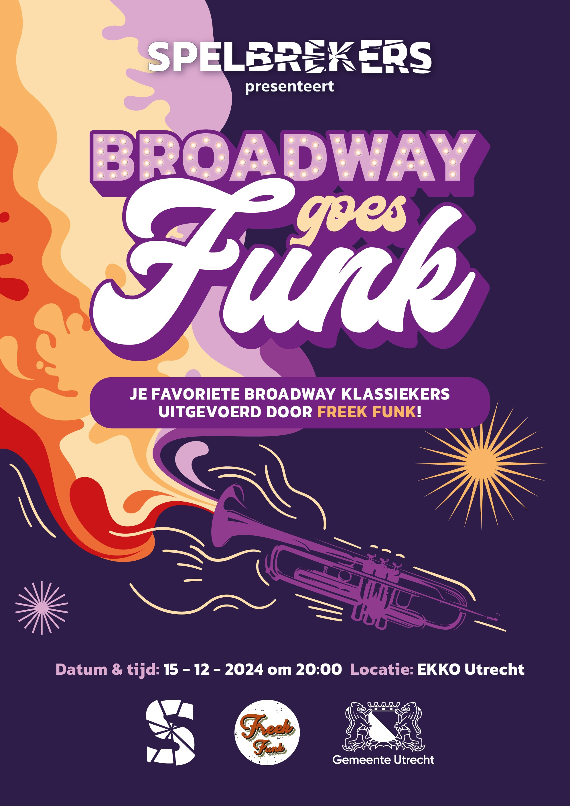
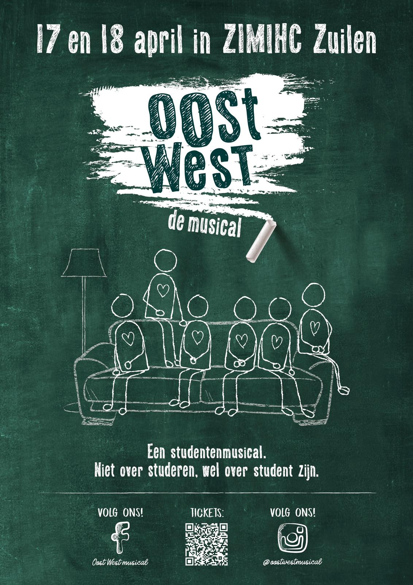
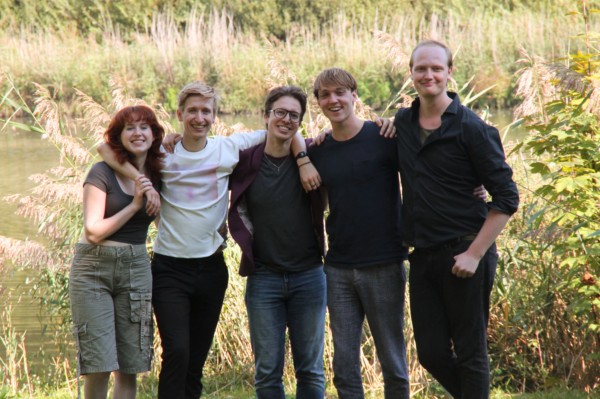

Spelbrekers is een stichting met de missie om tradities in de musicalmarkt te doorbreken, originele voorstellingen te schrijven en produceren en vernieuwende projecten te organiseren.
Scroll naar benedenVolg ons op social media

Broadway Goes Funk is een unieke fusion van Broadway klassiekers en funkmuziek. Het concert biedt de kans om luidkeels mee te zingen met de grootste musicalhits, en ondertussen te dansen op de opzwepende ritmes van live funkmuziek. Op 15 december 2024 heeft de eerste editie plaatsgevonden in de EKKO in Utrecht. De zaal werd omver geblazen door heerlijke funky vertolkingen van hits uit o.a. Hamilton, Wicked, Rent en Chicago. Doorgewinterde musicalfans, nieuwsgierige funk-liefhebbers, live-muziekliefhebbers; dit concert is voor iedereen!
Dit project is opgezet door Spelbrekers in samenwerking met de Utrechtse band Freek Funk.
Bekijk hieronder de aftermovie!

Het project waar het allemaal mee begon; een zelfgeschreven musical over het herdefiniëren van "thuis" tijdens je studententijd. Geschreven in het eerste en tweede jaar van onze conservatoriumtijd, tot in de puntjes in productie gezet in ons derde jaar, klaar om het daglicht te zien op 17 en 18 april 2020. Helaas vanwege de pandemie dus nooit opgevoerd, maar het schrijven smaakte naar meer. Daarom is na onze studententijd Spelbrekers ontstaan.
In onderstaand promofilmpje kun je een sfeerimpressie krijgen van Oost West!
Spelbrekers is een jonge Utrechtse musicalstichting met de missie om bestaande kaders binnen het Nederlandse musicallandschap te doorbreken. Op deze manier willen wij de huidige definitie van het begrip ‘musical’ uitbreiden zodat een zo groot mogelijk publiek kennis kan maken met de ontzettend sterke zeggingskracht van musical.
Dit doen we door originele voorstellingen te schrijven en produceren en door vernieuwende projecten te organiseren. Een echte Spelbreker breekt met tradities rondom muzikale en theatrale vormen en schuwt niet om maatschappijkritische onderwerpen aan te snijden. Maar altijd gebruikt Spelbrekers de kracht van musical om het publiek omver te blazen.

Ons bestuur bestaat uit:
Lars van der Meer - Voorzitter
Jonne Schreuder - Secretaris
Axel Blom - Penningmeester
Mats Mooijman - Algemeen bestuurslid
Joachim Grevelink - Algemeen bestuurslid
Deze bestuursleden hebben elkaar leren kennen op het Utrechts conservatorium, waar hun gezamenlijke passie voor muziek tot een zelfgeschreven musical heeft geleid. Dit project vormde voor hen de inspiratiebron om een stichting op te richten waarmee ze hun missie konden voortzetten.